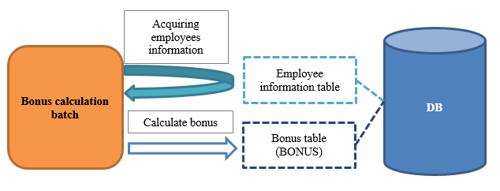

4.1.3.2. Create Batch to Derive Data (Chunk Step)¶
This section explains the Chunk step batch architecture, which calculates from existing data and derives new data based on the Example application.
- Overview of the function to be created
- 
- Communication confirmation procedure
Delete data in the table (bonus table) to be registered
Execute the following SQL from the console of H2 and delete the data in the bonus table.
TRUNCATE TABLE BONUS;
Execute bonus calculation batch
Execute the bonus calculation batch from the command prompt.
$cd {nablarch-example-batch-ee system repository} $mvn exec:java -Dexec.mainClass=nablarch.fw.batch.ee.Main ^ -Dexec.args=bonus-calculate
- Check the status after batch execution
Execute the following SQL from the console of H2 and confirm that the bonus information is registered.
SELECT * FROM BONUS;
4.1.3.2.1. Deriving data¶
A method to implement a batch that calculates from existing data and derives new data will be described in the following order.
- Reads data from the input data source
- Execute business logic
- Persistence process
- Create a configuration file for JOB
For the process flow, see process flow of Chunk step batch. For responsibility assignment, see responsibility assignment of the Chunk step.
Batch process is configured by a listener that provides common processes such as transaction control in addition to the implementation of the interface specified in JSR352 (external site). For details of the listener, see listener used in the batch application, and how to specify the listener.
4.1.3.2.1.1. Reads data from the input data source¶
Implements the process to fetch the data required for calculation.
- Create a form
In the Chunk step, use form to link data with ItemReader and ItemProcessor.
- EmployeeForm.java
public class EmployeeForm { //Partial excerpt /** Employee ID */ private Long employeeId; /** *Returns employee ID. * * @return Employee ID */ public Long getEmployeeId() { return employeeId; } /** * Sets the employee ID. * * @param employeeId Employee ID */ public void setEmployeeId(Long employeeId) { this.employeeId = employeeId; } }
- Create an ItemReader
Inherits AbstractItemReader and reads data.
Interface Name Obligation ItemReader Reads data.
Inherits AbstractItemReader, which provides a empty implementation.
- ItemReader#open
- ItemReader#readItem
- ItemReader#close
- EmployeeSearchReader.java
@Dependent @Named public class EmployeeSearchReader extends AbstractItemReader { /** List of employee information */ private DeferredEntityList<EmployeeForm> list; /** Iterator holding employee information */ private Iterator<EmployeeForm> iterator; @Override public void open(Serializable checkpoint) throws Exception { list = (DeferredEntityList<EmployeeForm>) UniversalDao.defer() .findAllBySqlFile(EmployeeForm.class, "SELECT_EMPLOYEE"); iterator = list.iterator(); } @Override public Object readItem() { if (iterator.hasNext()) { return iterator.next(); } return null; } @Override public void close() throws Exception { list.close(); } }
- EmployeeForm.sql
SELECT_EMPLOYEE= SELECT EMPLOYEE.EMPLOYEE_ID, EMPLOYEE.FULL_NAME, EMPLOYEE.BASIC_SALARY, EMPLOYEE.GRADE_CODE, GRADE.BONUS_MAGNIFICATION, GRADE.FIXED_BONUS FROM EMPLOYEE INNER JOIN GRADE ON EMPLOYEE.GRADE_CODE = GRADE.GRADE_CODE
- Key points of this implementation
- Named and Dependent are assigned to the class. For details, see Explanation of named and dependent of batchlet.
- Read the data to be processed with open method.
- For the location and how to create the SQL file, see Search with any SQL (SQL file).
- When reading a large amount of data, to prevent straining of the memory, use UniversalDao#defer to defer the loading of the search results.
- Returns one line of data from the data read by readItem method. The object returned by this method is given as an argument of processItem method of ItemProcessor that follows.
4.1.3.2.1.2. Execute business logic¶
Implements the business logic of bonus calculation.
- Create ItemProcessor
Implements ItemProcessor and carries out the business logic (since the persistence process is a duty of ItemWriter, it is not executed).
Interface Name Obligation ItemProcessor Performs the business process on one line of data.
- ItemProcessor#processItem
- BonusCalculateProcessor.java
@Dependent @Named public class BonusCalculateProcessor implements ItemProcessor { @Override public Object processItem(Object item) { EmployeeForm form = (EmployeeForm) item; Bonus bonus = new Bonus(); bonus.setEmployeeId(form.getEmployeeId()); bonus.setPayments(calculateBonus(form)); return bonus; } /** * Calculate bonus based on employee information. * * @param form Employee Information Form * @return Bonus */ private static Long calculateBonus(EmployeeForm form) { if (form.getFixedBonus() == null) { return form.getBasicSalary() * form.getBonusMagnification() / 100; } else { return form.getFixedBonus(); } } }
- Key points of this implementation
- At the timing when a certain number of entities (how to configure is described in Create a configuration file for JOB) are returned by the processItem method, the writeItems method of ItemWriter that follows is executed.
4.1.3.2.1.3. Persistence process¶
Implements the persistence process for DB update, etc.
- Create ItemWriter
Implements ItemWriter and makes data persistence.
Interface Name Obligation ItemWriter Persistence of data
- ItemWriter#writeItems
- BonusWriter.java
@Dependent @Named public class BonusWriter extends AbstractItemWriter { @Override public void writeItems(List<Object> items) { UniversalDao.batchInsert(items); } }
- Key points of this implementation
- Uses UniversalDao#batchInsert to batch register entity list.
- The transaction is committed after execution of the writeItems method and a new transaction is started.
- After execution of the writeItems method, the batch process is repeated from the execution of readItem method.
4.1.3.2.1.4. Create a configuration file for JOB¶
Create a file with the job execution configuration.
- bonus-calculate.xml
- Key points of this implementation
- The job definition file is located under /src/main/resources/META-INF/batch-jobs/.
- Specify the job name in the id attribute of the job element.
- Configure the number of writeItems processed each time by the item-count attribute of the chunk element.
- Refer to JSR352 specification (external site) for detailed description method of the configuration file.